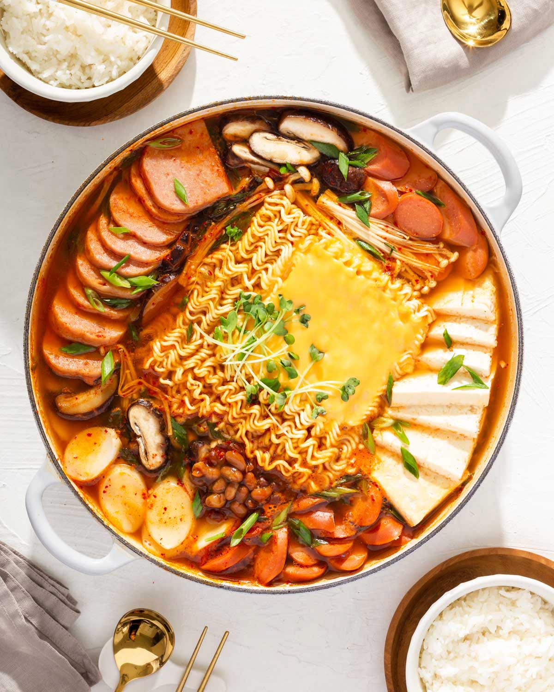

Korean Army Stew

The Korean Army Stew is loaded with Kimchi, spam, sausages, ramen noodles and much more!
Ingredients
- 4 cups chicken stock
- 200g SPAM, thinly sliced
- 4 cocktail Frankfurt sausage (150g, 5.3 ounces), thinly & diagonally sliced
- 1 package tofu, sliced
- 200g enoki mushrooms, base removed and stems separated
- 200g king oyster mushrooms, thinly sliced length ways
- 100g shiitake mushroom caps, thinly sliced
- 1/2 cup aged kimchi, cut into bite sized pieces
- 1 package instant ramen noodles
- 50g Korean rice cakes for soup, soaked in cold water for 15 min if it was frozen
- 30g green onions, thinly and diagonally sliced
Steps
- Assemble the main ingredients (except for instant ramen noodles, rice cakes, and green onion) in a shallow pot. Add the sauce in the middle. Pour the stock in the corner of the pot. Close the lid and boil it on medium high heat until the stock starts to boil (about 8 mins).
- Add instant ramen noodles, rice cakes, and green onions on top of the pot and boil uncovered until the noodles are cooked (about 2 to 3 mins). Reduce the heat to low (if you’re cooking on a portable burner and sharing the food at the dinning table).
- Start dishing out soup, protein and vegetables onto your own soup bowl. Serve with steamed rice (& with other Korean side dishes).